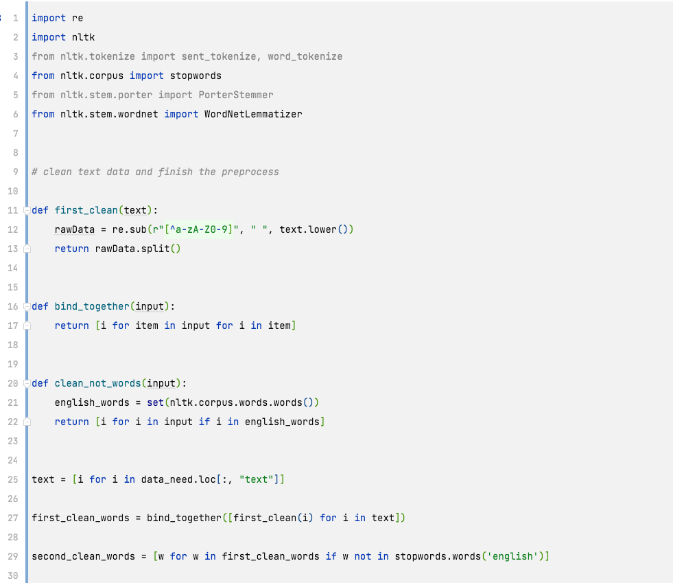
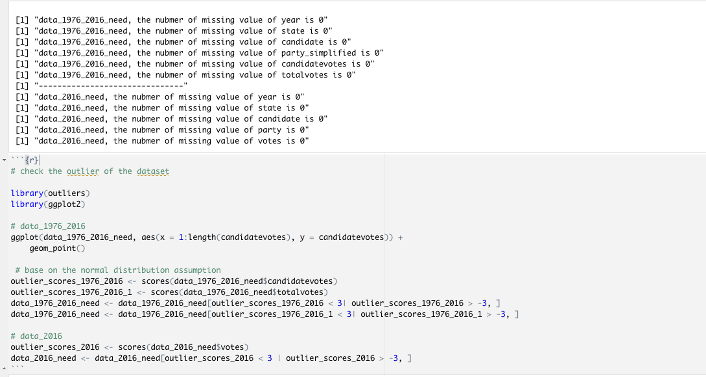

Data Cleaning Introduction
Text Data Cleaning Part(Hillary and Trump tweets)
I got Hillary tweets data from Twitter API with the allowance of the law. Due to some special restriction, I decided to choose October 2016 to February 2017 as the research window. Trumps' tweets have been forbidden to access, therefore I got the target data from a personal website which records Trumps' tweets.
Text Data Cleaning
There are 4 parts of text data cleaning.
1.Clear away html and link sign in the tweets which is not help for text analysis.
2.Clear away numbers, non-English words, and punctuation.
3.Clear away stop words because they have no special meaning.
4.Do Lemmatization to get the right word frequency.
Text Data Clean Code
Data Preview for Hillary and Trump Tweets(Word cloud)
Hillary Wordcloud
Trump Wordcloud
We can find that Trump has more confidence in winning the election, that's interesting!
Data Preview for Hillary and Trump Tweets(LDA topic model)
Hillary LDA
Trump LDA

LDA topic Model selects 10 related words as a topic. And we can guess the topic meaning through 10 words. Hillary used many vocabularies with strong action and words related to time. All of them are about family, time, action, vote. It's an interesting work but it's not out of expectation. Surprisingly, Trump uses a lot of words that play up the moment of crisis of America such as Fail, Lose, Disaster. Both of the candidates are good at motivating voters to vote by rendering a sense of Crisis
Table Data Cleaning Part(1976-2016 president election & 2016 president election data)
There are 5 parts of text data cleaning.
1.Have a quick look of two datasets.
2.Select the necessary subset/attribute of the whole dataset.
3.Check and Filter duplicate rows in the dataset.
4.Check and Fix the missing value in the dataset.
5.Check and Filter the outlier in the dataset.
